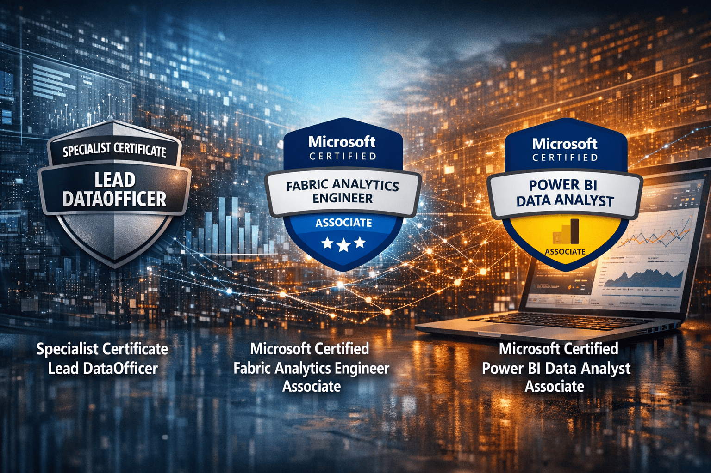
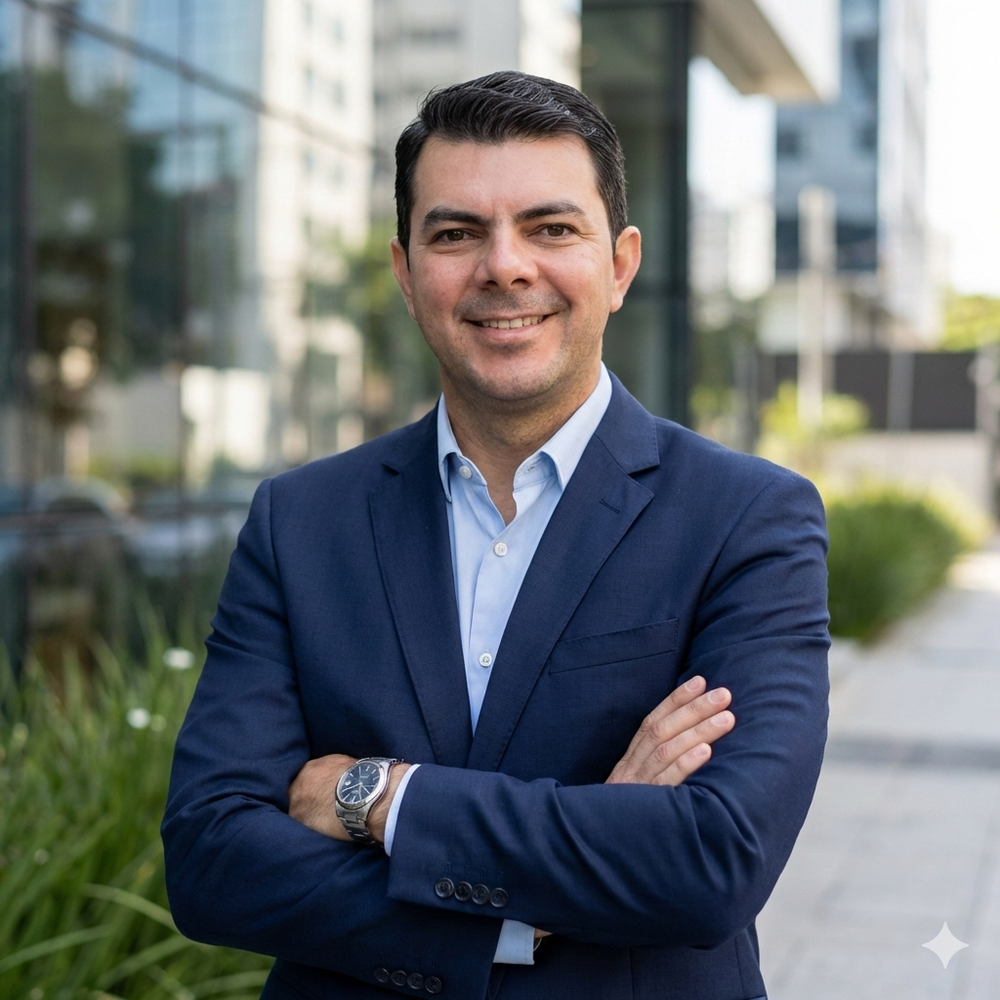

Especialista em transformação digital no setor de saúde com experiência comprovada em governança de dados, BI corporativo, Microsoft Fabric e DataOps. Combinando visão estratégica e excelência técnica para impulsionar decisões executivas.

Multinacional de consultoria com presença em +25 países, especializada em transformação organizacional com ROI médio de 5:1
Hospital privado de alta complexidade, referência em inovação e qualidade na Bolívia
Rede integrada de saúde oftalmológica dedicada à excelência médica e inovação tecnológica
Melhor operadora de saúde de Santa Catarina (IDSS 2014), 24x vencedora Top of Mind Estadual
Centro de referência em saúde integrado à Rede D'Or São Luiz, maior rede hospitalar privada do Brasil
Power BI Data Analyst Associate
2025
Cloud Computing Data Science
2025
Fabric Analytics Engineer Associate
2024
Especialista em Lead Data Officer
2024
Aceleração Digital na Saúde
2022
Estou sempre aberto a discutir novos projetos, oportunidades de consultoria ou parcerias estratégicas em transformação digital e analytics.
Santa Cruz de la Sierra, Bolivia